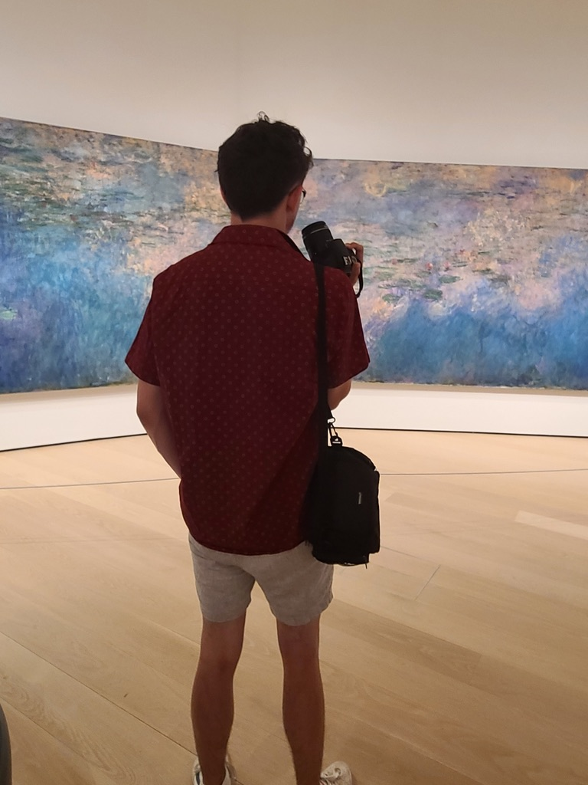
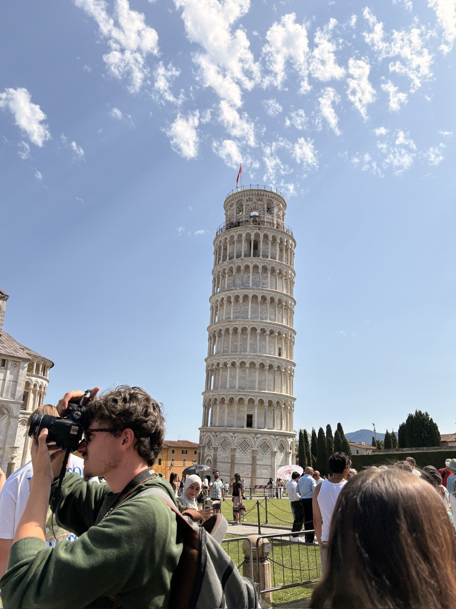

I'm Jackson Tyler. I am a graphic design student and photographer who has been working for around five years now.
In my time learning and working, I have taken a lot of photos during my travels that don't fall neatly into a label or traditional portfolio. This gallery acts as an interactive extension of my portfolio, showcasing the view through my lens in a blog-style fashion as I aim to see more and more of the world.
